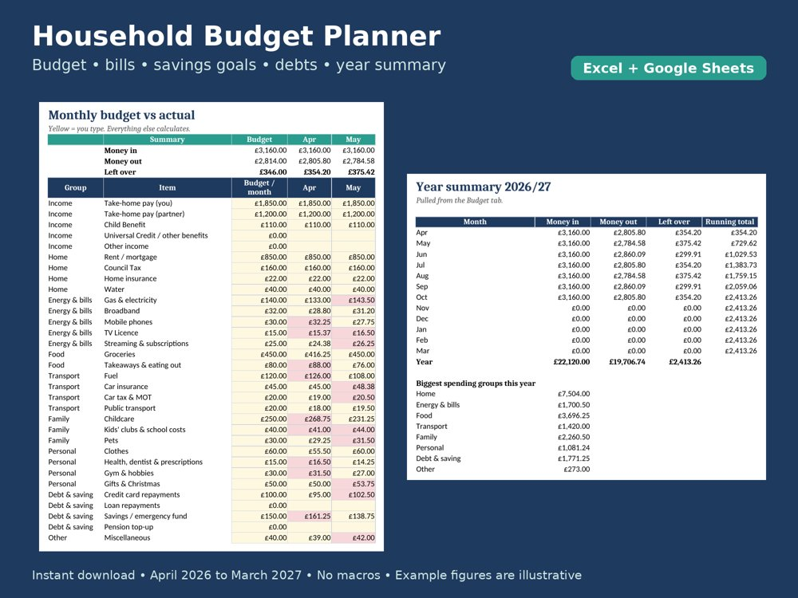

Making Tax Digital spreadsheets for 2026-27
Instant download after secure payment by Stripe. Prices in GBP.

UK Landlord MTD Tracker 2026-27
Rent, expenses and quarterly totals per property, portfolio dashboard, tax estimate. Excel.
£9.99
Buy now
UK Sole Trader MTD Tracker 2026-27
Income, HMRC expense categories, mileage, quarterly totals. Excel.
£7.99
Buy now
Bundle: Landlord + Sole Trader
Both trackers, for people with rental and self-employed income.
£12.49
Buy the bundle
UK Household Budget Planner 2026-27
Monthly budget vs actual (April to March), bills, savings goals, debts and a year summary. Excel and Google Sheets.
£5.99
Buy nowThese spreadsheets are record-keeping tools, not tax advice and not HMRC-recognised software. To submit Making Tax Digital updates you still need HMRC-compatible (e.g. bridging) software. Check all figures; speak to an accountant if unsure.